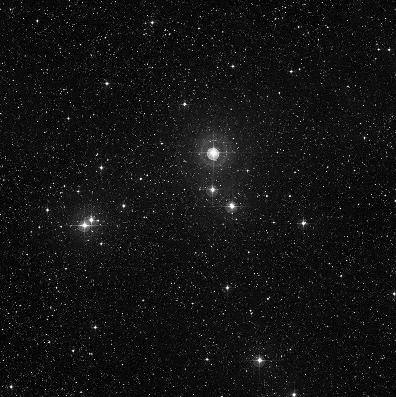
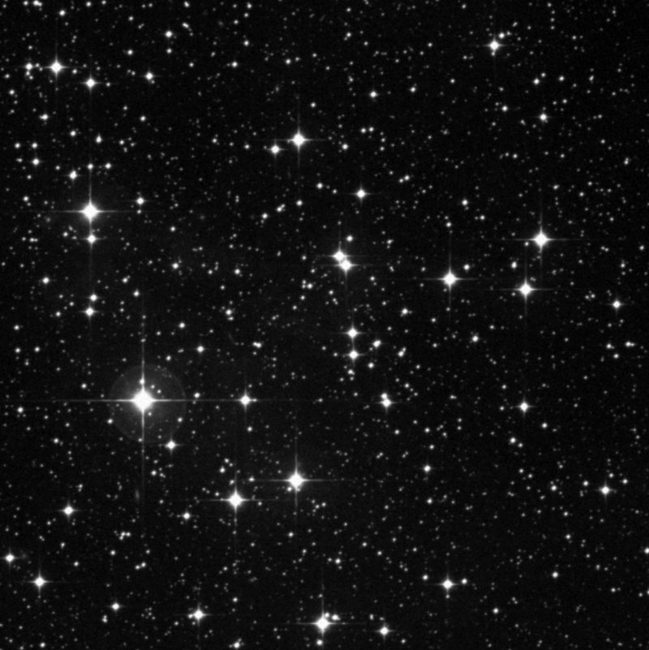
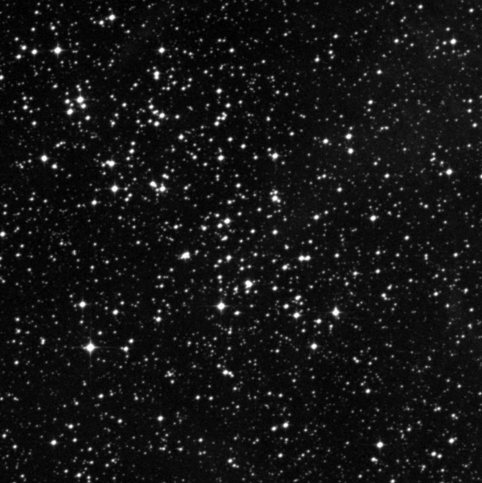
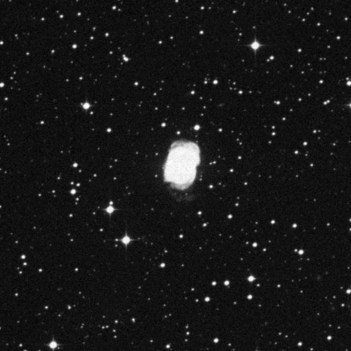
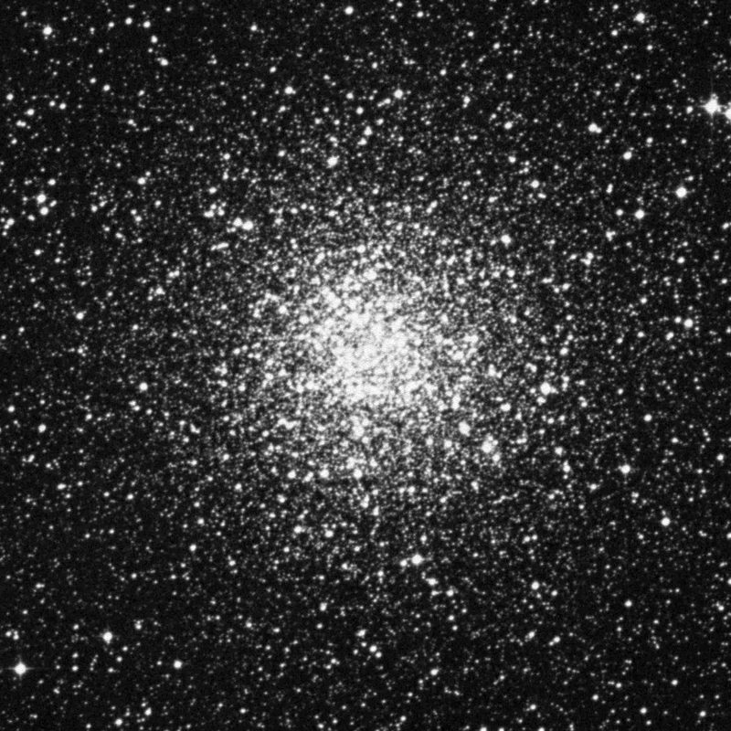

Deep Sky Notes
☰
Articles
Observing Notes ▾
Master Table
Browse by Constellation
Published
About
Catalogue
›
Constellations
›
Vela
Vela
5 objects in the catalogue

IC 2391 (OC)
Open Cluster
Mag 2.5 | Size 1.0°

NGC 2547 (OC)
Open Cluster
Mag 4.7 | Size 15.0′

NGC 2659 (OC)
Open Cluster
Mag 8.6 | Size 10.0′

NGC 3132 (PN)
Planetary Nebula
Mag 10.0 | Size 1.0′

NGC 3201 (GC)
Globular Cluster
Mag 8.2 | Size 18.2′